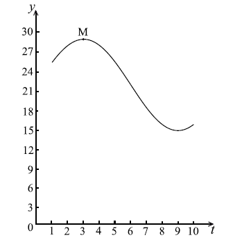
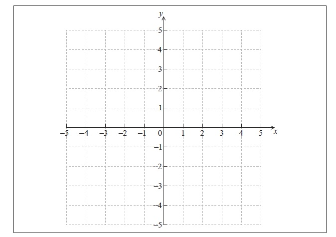
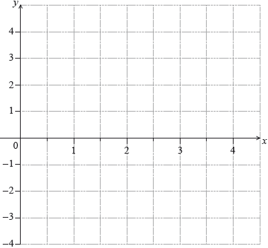
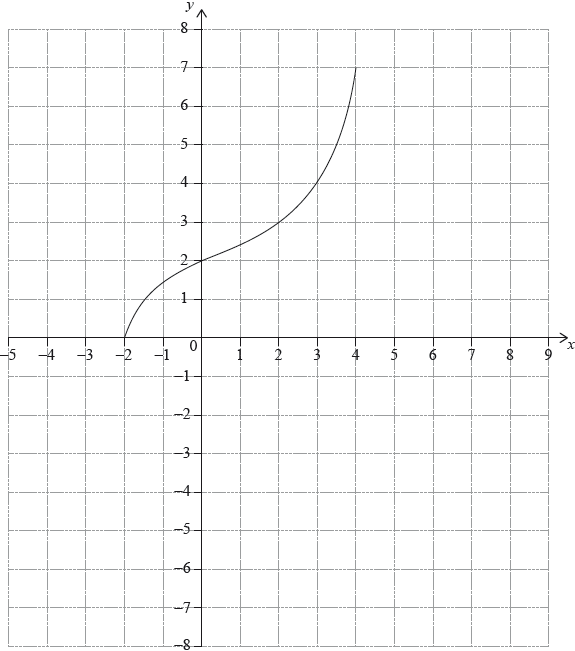
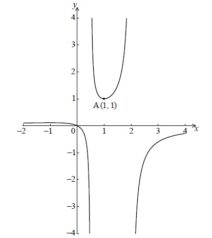
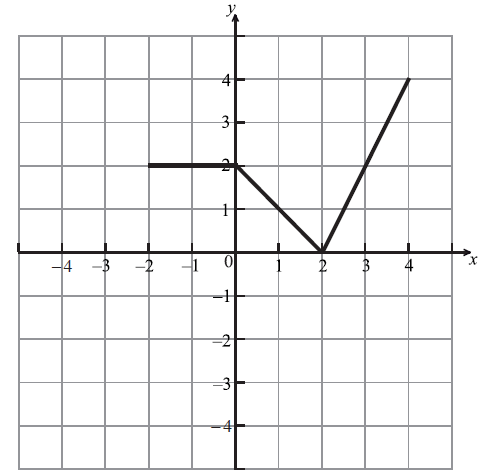
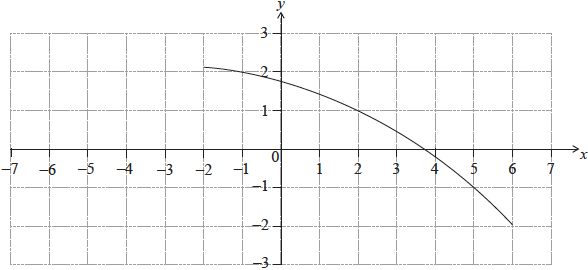

SL Paper 1
Let \(f(x) = {(x - 5)^3}\), for \(x \in \mathbb{R}\).
Find \({f^{ - 1}}(x)\).
Let \(g\) be a function so that \((f \circ g)(x) = 8{x^6}\). Find \(g(x)\).
Let \(f(x) = {\log _p}(x + 3)\) for \(x > - 3\) . Part of the graph of f is shown below.

The graph passes through A(6, 2) , has an x-intercept at (−2, 0) and has an asymptote at \(x = - 3\) .
Find p .
The graph of f is reflected in the line \(y = x\) to give the graph of g .
(i) Write down the y-intercept of the graph of g .
(ii) Sketch the graph of g , noting clearly any asymptotes and the image of A.
The graph of \(f\) is reflected in the line \(y = x\) to give the graph of \(g\) .
Find \(g(x)\) .
Let \(f(x) = 6 + 6\sin x\) . Part of the graph of f is shown below.

The shaded region is enclosed by the curve of f , the x-axis, and the y-axis.
Solve for \(0 \le x < 2\pi \)
(i) \(6 + 6\sin x = 6\) ;
(ii) \(6 + 6\sin x = 0\) .
Write down the exact value of the x-intercept of f , for \(0 \le x < 2\pi \) .
The area of the shaded region is k . Find the value of k , giving your answer in terms of \(\pi \) .
Let \(g(x) = 6 + 6\sin \left( {x - \frac{\pi }{2}} \right)\) . The graph of f is transformed to the graph of g.
Give a full geometric description of this transformation.
Let \(g(x) = 6 + 6\sin \left( {x - \frac{\pi }{2}} \right)\) . The graph of f is transformed to the graph of g.
Given that \(\int_p^{p + \frac{{3\pi }}{2}} {g(x){\rm{d}}x} = k\) and \(0 \le p < 2\pi \) , write down the two values of p.
Let \(f(x) = {x^2}\) and \(g(x) = 2{(x - 1)^2}\) .
The graph of g can be obtained from the graph of f using two transformations.
Give a full geometric description of each of the two transformations.
The graph of g is translated by the vector \(\left( {\begin{array}{*{20}{c}}
3\\
{ - 2}
\end{array}} \right)\) to give the graph of h.
The point \(( - 1{\text{, }}1)\) on the graph of f is translated to the point P on the graph of h.
Find the coordinates of P.
Consider \(f(x) = {x^2} + qx + r\). The graph of \(f\) has a minimum value when \(x = - 1.5\).
The distance between the two zeros of \(f\) is 9.
Show that the two zeros are 3 and \( - 6\).
Find the value of \(q\) and of \(r\).
Consider the functions \(f(x)\) , \(g(x)\) and \(h(x)\) . The following table gives some values associated with these functions.

The following diagram shows parts of the graphs of \(h\) and \(h''\) .

There is a point of inflexion on the graph of \(h\) at P, when \(x = 3\) .
Given that \(h(x) = f(x) \times g(x)\) ,
Write down the value of \(g(3)\) , of \(f'(3)\) , and of \(h''(2)\) .
Explain why P is a point of inflexion.
find the \(y\)-coordinate of P.
find the equation of the normal to the graph of \(h\) at P.
Let \(f(x) = 2x - 1\) and \(g(x) = 3{x^2} + 2\) .
Find \({f^{ - 1}}(x)\) .
Find \((f \circ g)(1)\) .
The diagram below shows the graph of a function \(f\) , for \( - 1 \le x \le 2\) .

Write down the value of \(f(2)\).
Write down the value of \({f^{ - 1}}( - 1)\) .
Sketch the graph of \({f^{ - 1}}\) on the grid below.

Let \(f(x) = \sqrt x \) . Line L is the normal to the graph of f at the point (4, 2) .
In the diagram below, the shaded region R is bounded by the x-axis, the graph of f and the line L .

Show that the equation of L is \(y = - 4x + 18\) .
Point A is the x-intercept of L . Find the x-coordinate of A.
Find an expression for the area of R .
The region R is rotated \(360^\circ \) about the x-axis. Find the volume of the solid formed, giving your answer in terms of \(\pi \) .
Let \(f(x) = 3{(x + 1)^2} - 12\) .
Show that \(f(x) = 3{x^2} + 6x - 9\) .
For the graph of f
(i) write down the coordinates of the vertex;
(ii) write down the y-intercept;
(iii) find both x-intercepts.
Hence sketch the graph of f .
Let \(g(x) = {x^2}\) . The graph of f may be obtained from the graph of g by the following two transformations
a stretch of scale factor t in the y-direction,
followed by a translation of \(\left( \begin{array}{l}
p\\
q
\end{array} \right)\) .
Write down \(\left( \begin{array}{l}
p\\
q
\end{array} \right)\) and the value of t .
Let \(f(x) = 7 - 2x\) and \(g(x) = x + 3\) .
Find \((g \circ f)(x)\) .
Write down \({g^{ - 1}}(x)\) .
Find \((f \circ {g^{ - 1}})(5)\) .
The following diagram shows the graph of \(y = f(x)\), for \( - 4 \le x \le 5\).

Write down the value of \(f( - 3)\).
Write down the value of \({f^{ - 1}}(1)\).
Find the domain of \({f^{ - 1}}\).
On the grid above, sketch the graph of \({f^{ - 1}}\).
The diagram below shows part of the graph of \(f(x) = (x - 1)(x + 3)\) .

(a) Write down the \(x\)-intercepts of the graph of \(f\) .
(b) Find the coordinates of the vertex of the graph of \(f\) .
Write down the \(x\)-intercepts of the graph of \(f\) .
Find the coordinates of the vertex of the graph of \(f\) .
Let \(f\left( x \right) = \sqrt {x + 2} \) for x ≥ 2 and g(x) = 3x − 7 for \(x \in \mathbb{R}\).
Write down f (14).
Find \(\left( {g \circ f} \right)\) (14).
Find g−1(x).
Let \(f(x) = 8x + 3\) and \(g(x) = 4x\), for \(x \in \mathbb{R}\).
Write down \(g(2)\).
Find \((f \circ g)(x)\).
Find \({f^{ - 1}}(x)\).
Let \(f(x) = 4x - 2\) and \(g(x) = - 2{x^2} + 8\) .
Find \({f^{ - 1}}(x)\) .
Find \((f \circ g)(1)\) .
Let \(f(x) = 3{x^2} - 6x + p\). The equation \(f(x) = 0\) has two equal roots.
Write down the value of the discriminant.
Hence, show that \(p = 3\).
The graph of \(f\)has its vertex on the \(x\)-axis.
Find the coordinates of the vertex of the graph of \(f\).
The graph of \(f\) has its vertex on the \(x\)-axis.
Write down the solution of \(f(x) = 0\).
The graph of \(f\) has its vertex on the \(x\)-axis.
The function can be written in the form \(f(x) = a{(x - h)^2} + k\). Write down the value of \(a\).
The graph of \(f\) has its vertex on the \(x\)-axis.
The function can be written in the form \(f(x) = a{(x - h)^2} + k\). Write down the value of \(h\).
The graph of \(f\) has its vertex on the \(x\)-axis.
The function can be written in the form \(f(x) = a{(x - h)^2} + k\). Write down the value of \(k\).
The graph of \(f\) has its vertex on the \(x\)-axis.
The graph of a function \(g\) is obtained from the graph of \(f\) by a reflection of \(f\) in the \(x\)-axis, followed by a translation by the vector \(\left( \begin{array}{c}0\\6\end{array} \right)\). Find \(g\), giving your answer in the form \(g(x) = A{x^2} + Bx + C\).
Consider a function \(f\). The line L1 with equation \(y = 3x + 1\) is a tangent to the graph of \(f\) when \(x = 2\)
Let \(g\left( x \right) = f\left( {{x^2} + 1} \right)\) and P be the point on the graph of \(g\) where \(x = 1\).
Write down \(f'\left( 2 \right)\).
Find \(f\left( 2 \right)\).
Show that the graph of g has a gradient of 6 at P.
Let L2 be the tangent to the graph of g at P. L1 intersects L2 at the point Q.
Find the y-coordinate of Q.
Let \(f(t) = a\cos b(t - c) + d\) , \(t \ge 0\) . Part of the graph of \(y = f(t)\) is given below.

When \(t = 3\) , there is a maximum value of 29, at M.
When \(t = 9\) , there is a minimum value of 15.
(i) Find the value of a.
(ii) Show that \(b = \frac{\pi }{6}\) .
(iii) Find the value of d.
(iv) Write down a value for c.
The transformation P is given by a horizontal stretch of a scale factor of \(\frac{1}{2}\) , followed by a translation of \(\left( {\begin{array}{*{20}{c}}
3\\
{ - 10}
\end{array}} \right)\) .
Let \({M'}\) be the image of M under P. Find the coordinates of \({M'}\) .
The graph of g is the image of the graph of f under P.
Find \(g(t)\) in the form \(g(t) = 7\cos B(t - c) + D\) .
The graph of g is the image of the graph of f under P.
Give a full geometric description of the transformation that maps the graph of g to the graph of f .
Let \(f(x) = a{(x - h)^2} + k\). The vertex of the graph of \(f\) is at \((2, 3)\) and the graph passes through \((1, 7)\).
Write down the value of \(h\) and of \(k\).
Find the value of \(a\).
The diagram below shows the graph of a function \(f(x)\) , for \( - 2 \le x \le 3\) .

Sketch the graph of \(f( - x)\) on the grid below.

The graph of f is transformed to obtain the graph of g . The graph of g is shown below.

The function g can be written in the form \(g(x) = af(x + b)\) . Write down the value of a and of b .
Let \(f(x) = {x^2} + 4\) and \(g(x) = x - 1\) .
Find \((f \circ g)(x)\) .
The vector \(\left( {\begin{array}{*{20}{c}}
3\\
{ - 1}
\end{array}} \right)\) translates the graph of \((f \circ g)\) to the graph of h .
Find the coordinates of the vertex of the graph of h .
The vector \(\left( {\begin{array}{*{20}{c}}
3\\
{ - 1}
\end{array}} \right)\) translates the graph of \((f \circ g)\) to the graph of h .
Show that \(h(x) = {x^2} - 8x + 19\) .
The vector \(\left( {\begin{array}{*{20}{c}}
3\\
{ - 1}
\end{array}} \right)\) translates the graph of \((f \circ g)\) to the graph of h .
The line \(y = 2x - 6\) is a tangent to the graph of h at the point P. Find the x-coordinate of P.
Let \(f(x) = m - \frac{1}{x}\), for \(x \ne 0\). The line \(y = x - m\) intersects the graph of \(f\) in two distinct points. Find the possible values of \(m\).
Let \(f(x) = 2{x^3} + 3\) and \(g(x) = {{\rm{e}}^{3x}} - 2\) .
(i) Find \(g(0)\) .
(ii) Find \((f \circ g)(0)\) .
Find \({f^{ - 1}}(x)\) .
Let \(f(x) = {x^2}\). The following diagram shows part of the graph of \(f\).

The line \(L\) is the tangent to the graph of \(f\) at the point \({\text{A}}( - k,{\text{ }}{k^2})\), and intersects the \(x\)-axis at point B. The point C is \(( - k,{\text{ }}0)\).
The region \(R\) is enclosed by \(L\), the graph of \(f\), and the \(x\)-axis. This is shown in the following diagram.

Write down \(f'(x)\).
Find the gradient of \(L\).
Show that the \(x\)-coordinate of B is \( - \frac{k}{2}\).
Find the area of triangle ABC, giving your answer in terms of \(k\).
Given that the area of triangle ABC is \(p\) times the area of \(R\), find the value of \(p\).
The following diagram shows the graph of a quadratic function f , for \(0 \le x \le 4\) .

The graph passes through the point P(0, 13) , and its vertex is the point V(2, 1) .
The function can be written in the form \(f(x) = a{(x - h)^2} + k\) .
(i) Write down the value of h and of k .
(ii) Show that \(a = 3\) .
Find \(f(x)\) , giving your answer in the form \(A{x^2} + Bx + C\) .
Calculate the area enclosed by the graph of f , the x-axis, and the lines \(x = 2\) and \(x = 4\) .
The following diagram shows part of the graph of a quadratic function f .

The x-intercepts are at \(( - 4{\text{, }}0)\) and \((6{\text{, }}0)\) , and the y-intercept is at \((0{\text{, }}240)\) .
Write down \(f(x)\) in the form \(f(x) = - 10(x - p)(x - q)\) .
Find another expression for \(f(x)\) in the form \(f(x) = - 10{(x - h)^2} + k\) .
Show that \(f(x)\) can also be written in the form \(f(x) = 240 + 20x - 10{x^2}\) .
A particle moves along a straight line so that its velocity, \(v{\text{ m}}{{\text{s}}^{ - 1}}\) , at time t seconds is given by \(v = 240 + 20t - 10{t^2}\) , for \(0 \le t \le 6\) .
(i) Find the value of t when the speed of the particle is greatest.
(ii) Find the acceleration of the particle when its speed is zero.
Let \(f(x) = {x^2} - 4x + 5\).
The function can also be expressed in the form \(f(x) = {(x - h)^2} + k\).
Find the equation of the axis of symmetry of the graph of \(f\).
(i) Write down the value of \(h\).
(ii) Find the value of \(k\).
Let \(f(x) = \cos 2x\) and \(g(x) = 2{x^2} - 1\) .
Find \(f\left( {\frac{\pi }{2}} \right)\) .
Find \((g \circ f)\left( {\frac{\pi }{2}} \right)\) .
Given that \((g \circ f)(x)\) can be written as \(\cos (kx)\) , find the value of k, \(k \in \mathbb{Z}\) .
Let \(f(x) = \ln (x + 5) + \ln 2\) , for \(x > - 5\) .
Find \({f^{ - 1}}(x)\) .
Let \(g(x) = {{\rm{e}}^x}\) .
Find \((g \circ f)(x)\) , giving your answer in the form \(ax + b\) , where \(a,b \in \mathbb{Z}\) .
Let \(f(x) = k{\log _2}x\) .
Given that \({f^{ - 1}}(1) = 8\) , find the value of \(k\) .
Find \({f^{ - 1}}\left( {\frac{2}{3}} \right)\) .
Let \(f(x) = \frac{{{{(\ln x)}^2}}}{2}\), for \(x > 0\).
Let \(g(x) = \frac{1}{x}\). The following diagram shows parts of the graphs of \(f'\) and g.

The graph of \(f'\) has an x-intercept at \(x = p\).
Show that \(f'(x) = \frac{{\ln x}}{x}\).
There is a minimum on the graph of \(f\). Find the \(x\)-coordinate of this minimum.
Write down the value of \(p\).
The graph of \(g\) intersects the graph of \(f'\) when \(x = q\).
Find the value of \(q\).
The graph of \(g\) intersects the graph of \(f'\) when \(x = q\).
Let \(R\) be the region enclosed by the graph of \(f'\), the graph of \(g\) and the line \(x = p\).
Show that the area of \(R\) is \(\frac{1}{2}\).
Let \(f(x) = 1 + {{\text{e}}^{ - x}}\) and \(g(x) = 2x + b\), for \(x \in \mathbb{R}\), where \(b\) is a constant.
Find \((g \circ f)(x)\).
Given that \(\mathop {\lim }\limits_{x \to + \infty } (g \circ f)(x) = - 3\), find the value of \(b\).
Let \(f(x) = lo{g_3}\sqrt x \) , for \(x > 0\) .
Show that \({f^{ - 1}}(x) = {3^{2x}}\) .
Write down the range of \({f^{ - 1}}\) .
Let \(g(x) = {\log _3}x\) , for \(x > 0\) .
Find the value of \(({f^{ - 1}} \circ g)(2)\) , giving your answer as an integer.
Let \(f(x) = 3\sin \left( {\frac{\pi }{2}x} \right)\), for \(0 \leqslant x \leqslant 4\).
(i) Write down the amplitude of \(f\).
(ii) Find the period of \(f\).
On the following grid sketch the graph of \(f\).

Let f be the function given by \(f(x) = {{\rm{e}}^{0.5x}}\) , \(0 \le x \le 3.5\) . The diagram shows the graph of f .

On the same diagram, sketch the graph of \({f^{ - 1}}\) .
Write down the range of \({f^{ - 1}}\) .
Find \({f^{ - 1}}(x)\) .
Let \(f(x) = 5x\) and \(g(x) = {x^2} + 1\), for \(x \in \mathbb{R}\).
Find \({f^{ - 1}}(x)\).
Find \((f \circ g)(7)\).
The following diagram shows the graph of a function \(f\), with domain \( - 2 \leqslant x \leqslant 4\).

The points \(( - 2,{\text{ }}0)\) and \((4,{\text{ }}7)\) lie on the graph of \(f\).
Write down the range of \(f\).
Write down \(f(2)\);
Write down \({f^{ - 1}}(2)\).
On the grid, sketch the graph of \({f^{ - 1}}\).
Let \(f(x) = \frac{1}{2}{x^2} + kx + 8\) , where \(k \in \mathbb{Z}\) .
Find the values of k such that \(f(x) = 0\) has two equal roots.
Each value of k is equally likely for \( - 5 \le k \le 5\) . Find the probability that \(f(x) = 0\) has no roots.
Let \(f(x) = 3x - 2\) and \(g(x) = \frac{5}{{3x}}\), for \(x \ne 0\).
Let \(h(x) = \frac{5}{{x + 2}}\), for \(x \geqslant 0\). The graph of h has a horizontal asymptote at \(y = 0\).
Find \({f^{ - 1}}(x)\).
Show that \(\left( {g \circ {f^{ - 1}}} \right)(x) = \frac{5}{{x + 2}}\).
Find the \(y\)-intercept of the graph of \(h\).
Hence, sketch the graph of \(h\).
For the graph of \({h^{ - 1}}\), write down the \(x\)-intercept;
For the graph of \({h^{ - 1}}\), write down the equation of the vertical asymptote.
Given that \({h^{ - 1}}(a) = 3\), find the value of \(a\).
Let \(f(x) = p + \frac{9}{{x - q}}\), for \(x \ne q\). The line \(x = 3\) is a vertical asymptote to the graph of \(f\).
Write down the value of \(q\).
The graph of \(f\) has a \(y\)-intercept at \((0,{\text{ }}4)\).
Find the value of \(p\).
The graph of \(f\) has a \(y\)-intercept at \((0,{\text{ }}4)\).
Write down the equation of the horizontal asymptote of the graph of \(f\).
Let \(f(x) = p{x^3} + p{x^2} + qx\).
Find \(f'(x)\).
Given that \(f'(x) \geqslant 0\), show that \({p^2} \leqslant 3pq\).
Let \(f(x) = 8x - 2{x^2}\) . Part of the graph of f is shown below.

Find the x-intercepts of the graph.
(i) Write down the equation of the axis of symmetry.
(ii) Find the y-coordinate of the vertex.
The velocity v ms−1 of a particle at time t seconds, is given by \(v = 2t + \cos 2t\) , for \(0 \le t \le 2\) .
Write down the velocity of the particle when \(t = 0\) .
When \(t = k\) , the acceleration is zero.
(i) Show that \(k = \frac{\pi }{4}\) .
(ii) Find the exact velocity when \(t = \frac{\pi }{4}\) .
When \(t < \frac{\pi }{4}\) , \(\frac{{{\rm{d}}v}}{{{\rm{d}}t}} > 0\) and when \(t > \frac{\pi }{4}\) , \(\frac{{{\rm{d}}v}}{{{\rm{d}}t}} > 0\) .
Sketch a graph of v against t .
Let d be the distance travelled by the particle for \(0 \le t \le 1\) .
(i) Write down an expression for d .
(ii) Represent d on your sketch.
Let \(f(x) = p{x^2} + (10 - p)x + \frac{5}{4}p - 5\).
Show that the discriminant of \(f(x)\) is \(100 - 4{p^2}\).
Find the values of \(p\) so that \(f(x) = 0\) has two equal roots.
Let \(f\) be a quadratic function. Part of the graph of \(f\) is shown below.

The vertex is at P(\(4\), \(2\)) and the y-intercept is at Q(\(0\), \(6\)) .
Write down the equation of the axis of symmetry.
The function f can be written in the form \(f(x) = a{(x - h)^2} + k\) .
Write down the value of h and of k .
The function f can be written in the form \(f(x) = a{(x - h)^2} + k\) .
Find a .
The following diagram shows part of the graph of f , where \(f(x) = {x^2} - x - 2\) .

Find both x-intercepts.
Find the x-coordinate of the vertex.
Consider \(f(x) = \ln ({x^4} + 1)\) .
The second derivative is given by \(f''(x) = \frac{{4{x^2}(3 - {x^4})}}{{{{({x^4} + 1)}^2}}}\) .
The equation \(f''(x) = 0\) has only three solutions, when \(x = 0\) , \( \pm \sqrt[4]{3}\) \(( \pm 1.316 \ldots )\) .
Find the value of \(f(0)\) .
Find the set of values of \(x\) for which \(f\) is increasing.
(i) Find \(f''(1)\) .
(ii) Hence, show that there is no point of inflexion on the graph of \(f\) at \(x = 0\) .
There is a point of inflexion on the graph of \(f\) at \(x = \sqrt[4]{3}\) \((x = 1.316 \ldots )\) .
Sketch the graph of \(f\) , for \(x \ge 0\) .
Let \(f(x) = \frac{x}{{ - 2{x^2} + 5x - 2}}\) for \( - 2 \le x \le 4\) , \(x \ne \frac{1}{2}\) , \(x \ne 2\) . The graph of \(f\) is given below.

The graph of \(f\) has a local minimum at A(\(1\), \(1\)) and a local maximum at B.
Use the quotient rule to show that \(f'(x) = \frac{{2{x^2} - 2}}{{{{( - 2{x^2} + 5x - 2)}^2}}}\) .
Hence find the coordinates of B.
Given that the line \(y = k\) does not meet the graph of f , find the possible values of k .
Given that \({2^m} = 8\) and \({2^n} = 16\), write down the value of \(m\) and of \(n\).
Hence or otherwise solve \({8^{2x + 1}} = {16^{2x - 3}}\).
Let \(f(x) = p(x - q)(x - r)\) . Part of the graph of f is shown below.

The graph passes through the points (−2, 0), (0, − 4) and (4, 0) .
Write down the value of q and of r.
Write down the equation of the axis of symmetry.
Find the value of p.
Let \(f(x) = 6x\sqrt {1 - {x^2}} \), for \( - 1 \leqslant x \leqslant 1\), and \(g(x) = \cos (x)\), for \(0 \leqslant x \leqslant \pi \).
Let \(h(x) = (f \circ g)(x)\).
Write \(h(x)\) in the form \(a\sin (bx)\), where \(a,{\text{ }}b \in \mathbb{Z}\).
Hence find the range of \(h\).
A quadratic function \(f\) can be written in the form \(f(x) = a(x - p)(x - 3)\). The graph of \(f\) has axis of symmetry \(x = 2.5\) and \(y\)-intercept at \((0,{\text{ }} - 6)\)
Find the value of \(p\).
Find the value of \(a\).
The line \(y = kx - 5\) is a tangent to the curve of \(f\). Find the values of \(k\).
The following diagram shows part of the graph of a quadratic function \(f\).

The vertex is at \((3,{\text{ }} - 1)\) and the \(x\)-intercepts at 2 and 4.
The function \(f\) can be written in the form \(f(x) = {(x - h)^2} + k\).
The function can also be written in the form \(f(x) = (x - a)(x - b)\).
Write down the value of \(h\) and of \(k\).
Write down the value of \(a\) and of \(b\).
Find the \(y\)-intercept.
Let \(f(x) = \frac{{ax}}{{{x^2} + 1}}\) , \( - 8 \le x \le 8\) , \(a \in \mathbb{R}\) .The graph of f is shown below.

The region between \(x = 3\) and \(x = 7\) is shaded.
Show that \(f( - x) = - f(x)\) .
Given that \(f''(x) = \frac{{2ax({x^2} - 3)}}{{{{({x^2} + 1)}^3}}}\) , find the coordinates of all points of inflexion.
It is given that \(\int {f(x){\rm{d}}x = \frac{a}{2}} \ln ({x^2} + 1) + C\) .
(i) Find the area of the shaded region, giving your answer in the form \(p\ln q\) .
(ii) Find the value of \(\int_4^8 {2f(x - 1){\rm{d}}x} \) .
Let \(f(x) = 3 + \frac{{20}}{{{x^2} - 4}}\) , for \(x \ne \pm 2\) . The graph of f is given below.

The y-intercept is at the point A.
(i) Find the coordinates of A.
(ii) Show that \(f'(x) = 0\) at A.
The second derivative \(f''(x) = \frac{{40(3{x^2} + 4)}}{{{{({x^2} - 4)}^3}}}\) . Use this to
(i) justify that the graph of f has a local maximum at A;
(ii) explain why the graph of f does not have a point of inflexion.
Describe the behaviour of the graph of \(f\) for large \(|x|\) .
Write down the range of \(f\) .
Solve \({\log _2}x + {\log _2}(x - 2) = 3\) , for \(x > 2\) .
The diagram below shows the graph of a function \(f(x)\) , for \( - 2 \le x \le 4\) .

Let \(h(x) = f( - x)\) . Sketch the graph of \(h\) on the grid below.

Let \(g(x) = \frac{1}{2}f(x - 1)\) . The point \({\text{A}}(3{\text{, }}2)\) on the graph of \(f\) is transformed to the point P on the graph of \(g\) . Find the coordinates of P.
Let \(f(x) = 3{(x + 1)^2} - 12\) .
Show that \(f(x) = 3{x^2} + 6x - 9\) .
For the graph of f
(i) write down the coordinates of the vertex;
(ii) write down the equation of the axis of symmetry;
(iii) write down the y-intercept;
(iv) find both x-intercepts.
Hence sketch the graph of f .
Let \(g(x) = {x^2}\) . The graph of f may be obtained from the graph of g by the two transformations:
a stretch of scale factor t in the y-direction
followed by a translation of \(\left( {\begin{array}{*{20}{c}}
p\\
q
\end{array}} \right)\) .
Find \(\left( {\begin{array}{*{20}{c}}
p\\
q
\end{array}} \right)\) and the value of t.
The equation \({x^2} - 3x + {k^2} = 4\) has two distinct real roots. Find the possible values of k .
Let \(f(x) = {x^2} + x - 6\).
Write down the \(y\)-intercept of the graph of \(f\).
Solve \(f(x) = 0\).
On the following grid, sketch the graph of \(f\), for \( - 4 \le x \le 3\).

Let \(f(x) = {x^2} - x\), for \(x \in \mathbb{R}\). The following diagram shows part of the graph of \(f\).

The graph of \(f\) crosses the \(x\)-axis at the origin and at the point \({\text{P}}(1,{\text{ }}0)\).
The line L is the normal to the graph of f at P.
The line \(L\) intersects the graph of \(f\) at another point Q, as shown in the following diagram.

Show that \(f’(1) = 1\).
Find the equation of \(L\) in the form \(y = ax + b\).
Find the \(x\)-coordinate of Q.
Find the area of the region enclosed by the graph of \(f\) and the line \(L\).
The following diagram shows the graph of a function \(f\).

Find \({f^{ - 1}}( - 1)\).
Find \((f \circ f)( - 1)\).
On the same diagram, sketch the graph of \(y = f( - x)\).
Find the value of \({\log _2}40 - {\log _2}5\) .
Find the value of \({8^{{{\log }_2}5}}\) .
Let \(f(x) = \sqrt {x - 5} \) , for \(x \ge 5\) .
Find \({f^{ - 1}}(2)\) .
Let \(g\) be a function such that \({g^{ - 1}}\) exists for all real numbers. Given that \(g(30) = 3\) , find \((f \circ {g^{ - 1}})(3)\) .
The equation \({x^2} + (k + 2)x + 2k = 0\) has two distinct real roots.
Find the possible values of \(k\).
Let \(f(x) = 3\ln x\) and \(g(x) = \ln 5{x^3}\) .
Express \(g(x)\) in the form \(f(x) + \ln a\) , where \(a \in {{\mathbb{Z}}^ + }\) .
The graph of g is a transformation of the graph of f . Give a full geometric description of this transformation.
Consider a function f (x) , for −2 ≤ x ≤ 2 . The following diagram shows the graph of f.
![]()
Write down the value of f (0).
Write down the value of f −1 (1).
Write down the range of f −1.
On the grid above, sketch the graph of f −1.
Let \(f(x) = \frac{1}{2}{x^3} - {x^2} - 3x\) . Part of the graph of f is shown below.

There is a maximum point at A and a minimum point at B(3, − 9) .
Find the coordinates of A.
Write down the coordinates of
(i) the image of B after reflection in the y-axis;
(ii) the image of B after translation by the vector \(\left( {\begin{array}{*{20}{c}}
{ - 2}\\
5
\end{array}} \right)\) ;
(iii) the image of B after reflection in the x-axis followed by a horizontal stretch with scale factor \(\frac{1}{2}\) .
Let \(f'(x) = \frac{{6 - 2x}}{{6x - {x^2}}}\), for \(0 < x < 6\).
The graph of \(f\) has a maximum point at P.
The \(y\)-coordinate of P is \(\ln 27\).
Find the \(x\)-coordinate of P.
Find \(f(x)\), expressing your answer as a single logarithm.
The graph of \(f\) is transformed by a vertical stretch with scale factor \(\frac{1}{{\ln 3}}\). The image of P under this transformation has coordinates \((a,{\text{ }}b)\).
Find the value of \(a\) and of \(b\), where \(a,{\text{ }}b \in \mathbb{N}\).
Consider \(f(x) = 2k{x^2} - 4kx + 1\) , for \(k \ne 0\) . The equation \(f(x) = 0\) has two equal roots.
Find the value of k .
The line \(y = p\) intersects the graph of f . Find all possible values of p .
The following diagram shows part of the graph of a quadratic function \(f\).

The vertex is at \((1,{\text{ }} - 9)\), and the graph crosses the y-axis at the point \((0,{\text{ }}c)\).
The function can be written in the form \(f(x) = {(x - h)^2} + k\).
Write down the value of \(h\) and of \(k\).
Find the value of \(c\).
Let \(g(x) = - {(x - 3)^2} + 1\). The graph of \(g\) is obtained by a reflection of the graph of \(f\) in the \(x\)-axis, followed by a translation of \(\left( {\begin{array}{*{20}{c}} p \\ q \end{array}} \right)\).
Find the value of \(p\) and of \(q\).
Find the x-coordinates of the points of intersection of the graphs of \(f\) and \(g\).
The following table shows the probability distribution of a discrete random variable \(A\), in terms of an angle \(\theta \).

Show that \(\cos \theta = \frac{3}{4}\).
Given that \(\tan \theta > 0\), find \(\tan \theta \).
Let \(y = \frac{1}{{\cos x}}\), for \(0 < x < \frac{\pi }{2}\). The graph of \(y\)between \(x = \theta \) and \(x = \frac{\pi }{4}\) is rotated 360° about the \(x\)-axis. Find the volume of the solid formed.
Let \(f(x) = {x^2}\) and \(g(x) = 2x - 3\) .
Find \({g^{ - 1}}(x)\) .
Find \((f \circ g)(4)\) .
Part of the graph of a function f is shown in the diagram below.

On the same diagram sketch the graph of \(y = - f(x)\) .
Let \(g(x) = f(x + 3)\) .
(i) Find \(g( - 3)\) .
(ii) Describe fully the transformation that maps the graph of f to the graph of g.
Consider the equation \({x^2} + (k - 1)x + 1 = 0\) , where k is a real number.
Find the values of k for which the equation has two equal real solutions.
Write the expression \(3\ln 2 - \ln 4\) in the form \(\ln k\), where \(k \in \mathbb{Z}\).
Hence or otherwise, solve \(3\ln 2 - \ln 4 = - \ln x\).
Let \(f\left( x \right) = p{x^2} + qx - 4p\), where p ≠ 0. Find Find the number of roots for the equation \(f\left( x \right) = 0\).
Justify your answer.
Let f(x) = ax2 − 4x − c. A horizontal line, L , intersects the graph of f at x = −1 and x = 3.
The equation of the axis of symmetry is x = p. Find p.
Hence, show that a = 2.
The equation of L is y = 5 . Find the value of c.
Let \(f(x) = {{\rm{e}}^{x + 3}}\) .
(i) Show that \({f^{ - 1}}(x) = \ln x - 3\) .
(ii) Write down the domain of \({f^{ - 1}}\) .
Solve the equation \({f^{ - 1}}(x) = \ln \frac{1}{x}\) .
Three consecutive terms of a geometric sequence are \(x - 3\), 6 and \(x + 2\).
Find the possible values of \(x\).
The following diagram shows the graph of a function \(f\), for −4 ≤ x ≤ 2.
![]()
On the same axes, sketch the graph of \(f\left( { - x} \right)\).
Another function, \(g\), can be written in the form \(g\left( x \right) = a \times f\left( {x + b} \right)\). The following diagram shows the graph of \(g\).
![]()
Write down the value of a and of b.
Let \(f(x) = \sin x + \frac{1}{2}{x^2} - 2x\) , for \(0 \le x \le \pi \) .
Let \(g\) be a quadratic function such that \(g(0) = 5\) . The line \(x = 2\) is the axis of symmetry of the graph of \(g\) .
The function \(g\) can be expressed in the form \(g(x) = a{(x - h)^2} + 3\) .
Find \(f'(x)\) .
Find \(g(4)\) .
(i) Write down the value of \(h\) .
(ii) Find the value of \(a\) .
Find the value of \(x\) for which the tangent to the graph of \(f\) is parallel to the tangent to the graph of \(g\) .
Write down the value of
(i) \({\log _3}27\);
(ii) \({\log _8}\frac{1}{8}\);
(iii) \({\log _{16}}4\).
Hence, solve \({\log _3}27 + {\log _8}\frac{1}{8} - {\log _{16}}4 = {\log _4}x\).
Let \(f(x) = 3{\tan ^4}x + 2k\) and \(g(x) = - {\tan ^4}x + 8k{\tan ^2}x + k\), for \(0 \leqslant x \leqslant 1\), where \(0 < k < 1\). The graphs of \(f\) and \(g\) intersect at exactly one point. Find the value of \(k\).